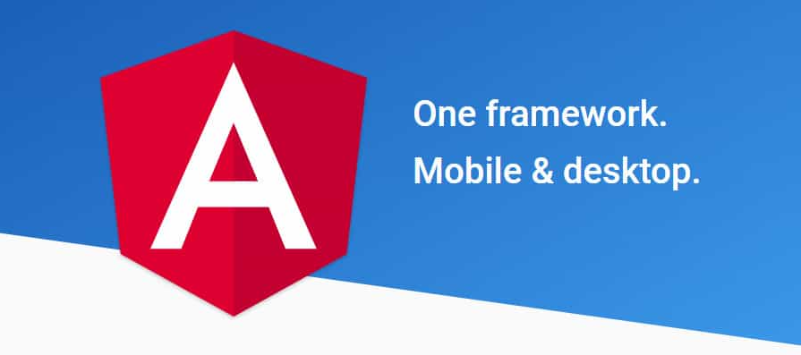
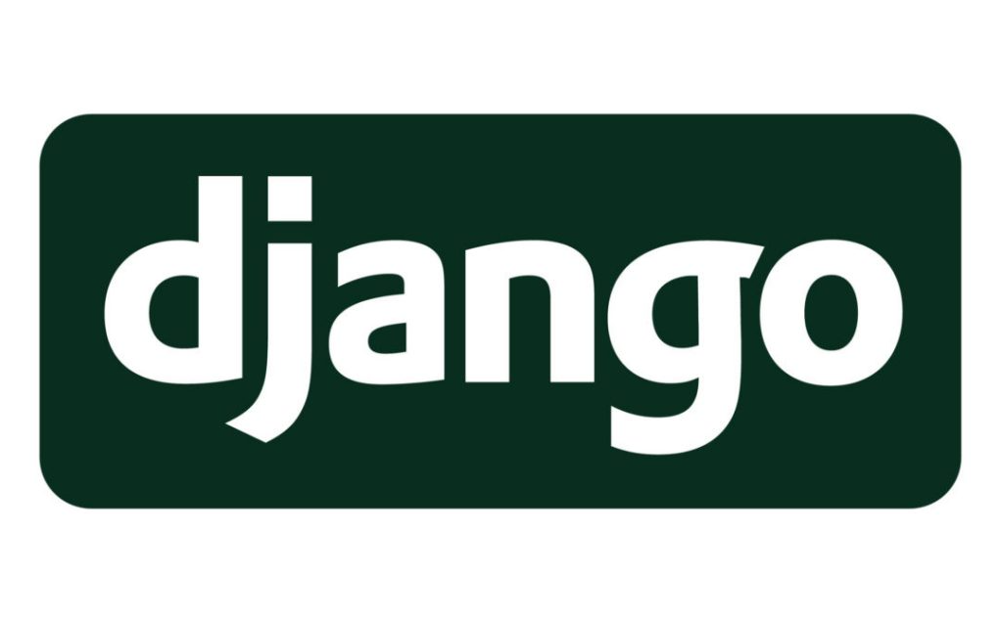
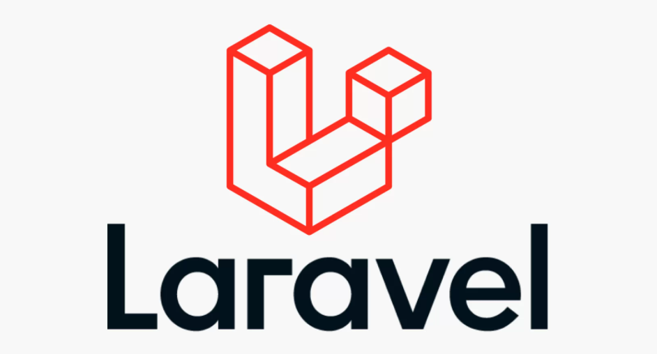
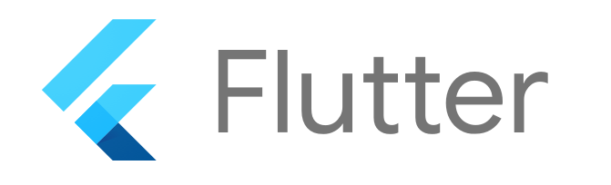
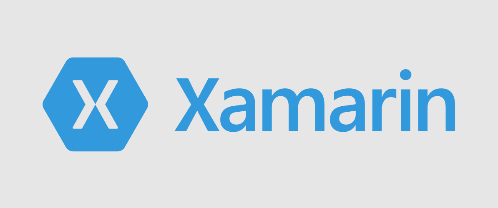
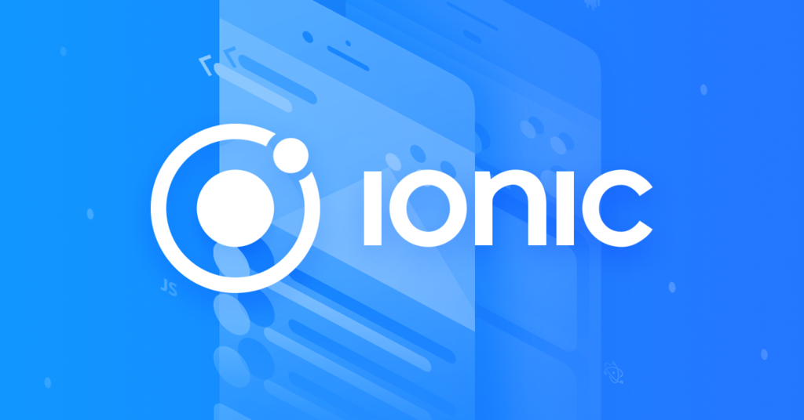
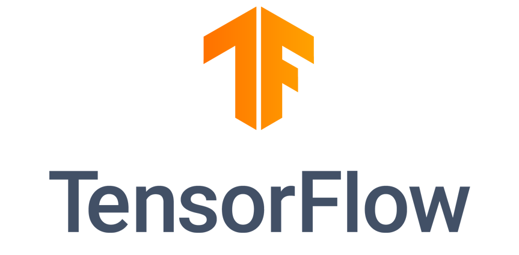
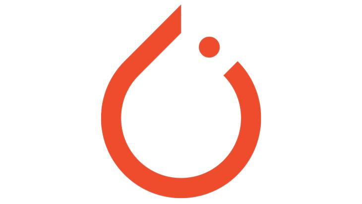
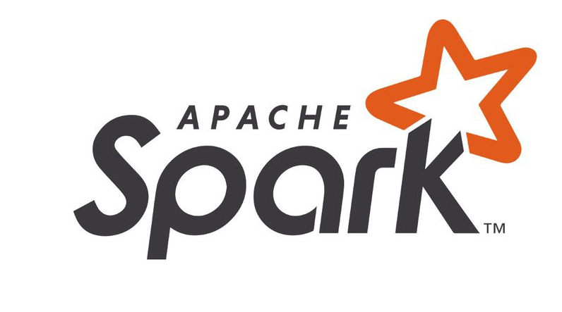

Apa Itu Framework? Pengertian, Fungsi, dan Contohnya
ditulis oleh Akbar putra pamungkas . pada 29 Oktober 2024.
Mungkin, framework atau kerangka kerja saat ini bukanlah istilah asing lagi. Berbagai bidang pekerjaan punya kerangka kerjanya sendiri untuk menjalankan prosesnya. Namun, sebenarnya framework adalah konsep yang awalnya dipopulerkan di dunia pemrograman.
Framework memiliki peran yang cukup penting dalam membantu programmer melakukan pekerjaannya. Mulai dari efisiensi waktu dan tenaga, hingga menghemat biaya.
Mau tahu lebih lanjut? Yuk scroll ke bawah! Kami akan menjelaskan pengertian framework dalam konteks pemrograman, cara kerja, fungsinya, dan jenis-jenis framework yang paling banyak digunakan dalam pemrograman. Mari mulai!
Apa itu framework?
Framework adalah struktur yang tersusun dari serangkaian kode generik dan berfungsi untuk mengembangkan sistem dan aplikasi. Kerangka kerja ini berperan sebagai template atau model yang menyediakan fungsi cerdas dan elemen struktur standar untuk memudahkan pekerjaan developer.
Karena menjadi semacam “fondasi” dalam mengerjakan proyek, framework membantu developer agar tidak perlu memulai proses development dari nol. Ada berbagai komponen siap pakai dan solusi yang mudah disesuaikan dalam framework untuk menyederhanakan proses pengembangan.
Selain itu, framework juga rutin diuji, dioptimalkan, dan diupdate oleh programmer berpengalaman sehingga biasanya cukup aman dan efisien. Satu framework bisa digunakan dalam beberapa proyek berbeda, sehingga bisa dibilang framework adalah ‘fasilitator’ di dunia pemrograman.
Solusi pemrograman yang mencakup source code, compiler, library, abstract class, API, dan elemen lainnya ini memberikan dukungan yang diperlukan untuk pemrograman software umum. Baik untuk web development, mobile development, atau data science, framework bisa memfasilitasi semua ini.
kegunaan dan fungsi framework
Fungsi utama framework adalah untuk memudahkan proses pengembangan software atau aplikasi. Dengan menyediakan struktur dasar yang memudahkan proses pemrograman sistem, framework sangat membantu dalam hal waktu dan keamanan.
Kemudian seperti yang dibahas tadi, karena dikembangkan oleh programmer berpengalaman dan punya banyak komunitas aktif, framework yang umumnya bersifat open-source biasanya sering menjalani pengujian dan pengoptimalan secara teratur.
Oleh karena itu, proses pelaporan dan perbaikan bisa dilakukan segera kalau ada kerusakan atau bug yang ditemukan. Framework juga punya konsistensi tinggi karena merupakan coding yang diuji secara ekstensif dan sudah terbukti berhasil.
Cara kerja framework memungkinkan developer untuk lebih fokus pada target utama proyek tanpa perlu cemas dengan elemen dasar strukturnya. Tanpa harus memulai proses dari nol, programmer bisa menghemat waktu dan uang di samping mengurangi risiko error.
Proses eksekusinya didasarkan pada penggunaan ulang rangkaian kode generik yang bisa diimplementasikan sebagai struktur dasar proyek. Desain ini harus sesuai dengan bahasa dan sifat framework yang dimaksud.
Sebagian besar framework memiliki forum dan dokumentasi ekstensif yang bisa membantu para programmer mempelajari pengetahuan baru dan mengatasi masalah.
Intinya, beberapa kegunaan utama framework yang membuatnya banyak dimanfaatkan dalam pemrograman adalah:
- Mengoptimalkan waktu pengembangan
- Menentukan dan menstandarkan langkah-langkah pemrograman
- Keamanan yang lebih ketat
- Menghindari kode duplikat
- Mengurangi terjadinya bug
- Meningkatkan konsistensi dalam proses pengembangan dan dalam aplikasi yang dibuat
- Meminimalkan kemungkinan error dalam kode
- Memungkinkan developer untuk fokus pada elemen desain tertentu
- Memudahkan dan mempersingkat proses belajar tim developer
- Menghemat biaya
Perbedaan framework dan library
Framework pada dasarnya terdiri dari elemen kode yang memandu proses pengembangan aplikasi dan mengoptimalkannya. Karena itu, framework terkadang disalahartikan sebagai library. Namun keduanya adalah konsep berbeda yang juga punya tujuan berbeda.
Framework menentukan struktur yang Anda gunakan untuk mengembangkan software. Jadi, sejak awal kode Anda harus mengikuti standar yang sudah ditetapkan oleh framework.
Di sisi lain, library adalah resource yang bisa Anda gunakan selama proses pengembangan, menyediakan elemen untuk menyelesaikan satu tahap pengembangan atau mengoptimalkannya.
Hal ini terkait dengan konsep Inversion of Control (IoC), di mana ketika suatu library digunakan, kode akan membuat permintaan ke library tersebut. Artinya, kontrol sepenuhnya ada pada kode, lalu library menanggapi fungsi yang diminta.
Nah, kebalikannya berlaku pada framework. Coding tidak lagi mengontrol proses, melainkan framework karena berperan untuk “memanggil” kode yang akan merespons persyaratan yang ditetapkan framework.
Contoh praktisnya seperti ini: misalnya Anda menggunakan fungsi curl, yang merupakan libary PHP. Saat Anda menggunakan salah satu fungsi curl, kode PHP memanggil fungsi tertentu dalam library yang dimaksud. Di sini, kode PHP “memanggil” fungsi curl di library.
Sekarang, misalnya Anda menggunakan framework PHP seperti Laravel. Relasi kontrol tersebut akan dibalik, karena frameworklah yang “memanggil” kode yang tertulis di dalamnya.
Penting untuk diingat bahwa dalam sebuah framework mungkin ada satu atau lebih library. Bagaimanapun, library merupakan salah satu fitur canggih yang ada dalam framework.
jenis-jenis framework
Menggunakan framework pemrograman memang memberikan banyak keuntungan. Namun, terkadang sulit untuk mencari tahu framework yang paling cocok untuk proyek Anda. Salah memilih framework justru akan membuang-buang waktu dan menimbulkan masalah.
Nah, oleh karena itu, Anda perlu memahami dulu jenis-jenis framework yang ada. Biasanya framework dibagi berdasarkan aplikasi dan mode implementasinya (front-end, back-end, dan JavaScript).
Di bawah ini kami akan menjelaskan beberapa framework pemrograman terpopuler saat ini, yang dibagi berdasarkan aplikasinya.
framework untuk aplikasi web
Framework untuk aplikasi web membantu proses pengembangan sistem online, seperti website, API, aplikasi, dan resource lain yang tersedia di internet.
Angular
Angular adalah framework JavaScript front-end open source yang menyediakan beberapa tool dan solusi untuk mempercepat web development dan menggabungkan template.
Karena memungkinkan integrasi yang luas, Angular cocok untuk website atau aplikasi yang memerlukan fleksibilitas dalam hal kustomisasi. Framework ini dikembangkan dan dikelola oleh tim khusus di Google.
Beberapa contoh website dan aplikasi yang menggunakan framework Angularjs adalah Netflix, PayPal, UpWork, dan Nike.
Django
Django adalah framework open source populer yang ditulis dan difokuskan pada bahasa pemrograman Python. Tujuannya yaitu untuk memungkinkan proses pengembangan aplikasi web yang cepat, sederhana, dan terukur.
Dengan elemen struktural yang ada di Django, Anda bisa melakukan semua proses yang perlu dilakukan secara pragmatis dengan aman.
Framework ini paling banyak digunakan oleh perusahaan startup dan teknologi dalam proyek interaktif yang memiliki banyak resource visual, misalnya game. Beberapa website dan sistem canggih yang dikembangkan dengan bantuan Django adalah Spotify, Instagram, YouTube, dan Pinterest.
Laravel
Laravel merupakan framework back-end yang didasarkan pada PHP, dan cukup populer karena syntax yang ekspresif dan canggih. Selain populer, Laravel juga fleksibel dan mudah digunakan.
Dimaksudkan untuk menghadirkan fungsi yang canggih namun sederhana, resource Laravel memungkinkan proses web development yang agile dan terintegrasi. Laravel juga memiliki tool untuk menggabungkan beberapa template.
Framework Laravel memiliki komunitas yang besar dan aktif, serta digunakan oleh banyak website terkenal seperti BBC, 9gag, Pfizer, Barchart, MyRank, dan World Walking.
Framework untuk Mobile Development
Framework untuk mobile development membantu jalannya proses pemrograman dalam pembuatan aplikasi dan layanan untuk perangkat seluler, baik di lingkungan khusus (native), hybrid, maupun cross-platform.
Flutter
Flutter adalah framework open-source milik Google. Framework ini menghadirkan berbagai tool yang fleksibel dan modern, memudahkan proses pengembangan aplikasi dan relatif mudah digunakan.
Framework Flutter mendukung iOS, Android, Windows, dan Linux, serta memiliki solusi yang bisa disesuaikan seperti widget. Beberapa aplikasi terpopuler yang menggunakan Flutter adalah Amazon, Alibaba, eBay, Adobe, dan Google Ads.
Xamarin
Xamarin merupakan framework open-source yang didasarkan pada .NET. Fungsinya yaitu untuk membentuk struktur pengembangan aplikasi seluler bagi Android, iOS, dan Windows. Xamarin dimiliki oleh Microsoft dan memiliki komunitas partner yang besar.
Tujuan framework Xamarin adalah menawarkan solusi cross-platform dengan kode bersama yang bisa digunakan kembali. Beberapa contoh website dan proyek yang dikembangkan dengannya adalah Microsoft Azure, Outback, Academia do Oscar, Alaska Airlines, Novarum DX, dan BBC Goodfood.
Ionic
Ionic adalah framework cross-platform open-source yang menggunakan JavaScript, HTML dan CSS. Framework ini membantu Anda membuat aplikasi hybrid agile yang berkualitas untuk Android, iOS, dan Windows.
Dari code base tunggal, framework ini memiliki beberapa library dan elemen integrasi yang memungkinkan pengembangan fitur seperti notifikasi push. Beberapa contoh aplikasi populer yang menggunakan Ionic adalah EA games, NHS, McDonald’s Türkiye, McLaren, NBC, dan Pacifica.
Framework DataScience
Data science kini menjadi salah satu sektor utama di seluruh dunia, yang makin berkembang sejak hadirnya AI (kecerdasan buatan). Bidang ini terkait dengan statistika, algoritme, metode ilmiah, dan sistem digital yang dimaksudkan untuk mengolah dan menganalisis data guna menghasilkan wawasan.
Oleh karena itu, fungsinya biasanya mencakup alat pengenalan suara, gambar, dan gerakan, lalu lokasi objek, transkripsi, klasifikasi teks, dan lain-lain.
TensorFlow
TensorFlow merupakan framework open-source untuk machine learning. Didukung oleh Google, TensorFlow memiliki ekosistem luas dan fleksibel yang memungkinkan pembuatan model machine training dan eksperimen riset.
Beberapa contoh proyek cerdas yang dikembangkan dengan TensorFlow adalah Google Translate, Mozilla’s DeepSpeech, dan Google RankBrain.
Sejumlah brand besar juga menggunakan framework ini untuk tugas-tugas tertentu pada suatu aplikasi, seperti Twitter yang menggunakannya untuk klasifikasi tweet di timeline.
Coca-Cola juga sudah menggunakannya untuk menampilkan bukti pembelian yang simpel, serta Spotify untuk mengoptimalkan rekomendasi.
PyTorch
PyTorch adalah framework machine learning yang dikembangkan oleh tim riset kecerdasan buatan di Facebook. Framework ini bersifat open-source serta bisa digunakan dengan Python dan C++/Java, dan bisa digunakan di Linux, Windows dan MacOS.
Selain itu, PyTorch juga didukung oleh platform cloud. Resource framework ini bergantung pada library yang ekstensif dan environment canggih yang mempercepat proses, mulai dari riset prototipe sampai merilis aplikasi.
Proyek dan website yang dikembangkan dengan PyTorch meliputi Amazon Ads, Comcastm Exelon, Trifo, Quadient.
Apache Spark
Framework ini dilengkapi dengan fitur-fitur terpadu untuk analisis data dan rekayasa data dalam skala besar. Apache Spark juga mendukung beberapa bahasa pemrograman, seperti Python, SQL, Scala, Java, dan R.
Selain data science dan pemrosesan informasi, Apache Spark memiliki elemen algoritme dan machine training. Karena bisa diintegrasikan dengan beberapa platform, framework ini banyak digunakan oleh brand-brand terkenal dalam proyeknya, seperti Visa, Microsoft, Cisco, Databricks, Verizon, dan Oracle.
Kesimpulan
Selesai! Setelah membaca artikel ini, Anda pun sudah tahu apa itu framework pemrograman beserta fungsi dan contohnya.
Framework adalah struktur yang terdiri dari sekumpulan kode, pola, dan class abstrak yang berfungsi untuk memudahkan dan mempercepat proses pengembangan aplikasi web, seluler, dan data science.
Berperan sebagai pemandu atau fondasi proyek, framework membantu programmer untuk mengembangkan sistem atau aplikasi tanpa harus mulai dari nol.
Dengan begitu penggunaan framework pun bisa menghemat waktu dan sumber daya, memberikan keamanan yang lebih ketat, dan meminimalkan error. Di samping itu, framework juga bisa menjadi prosedur standar terkait programming.